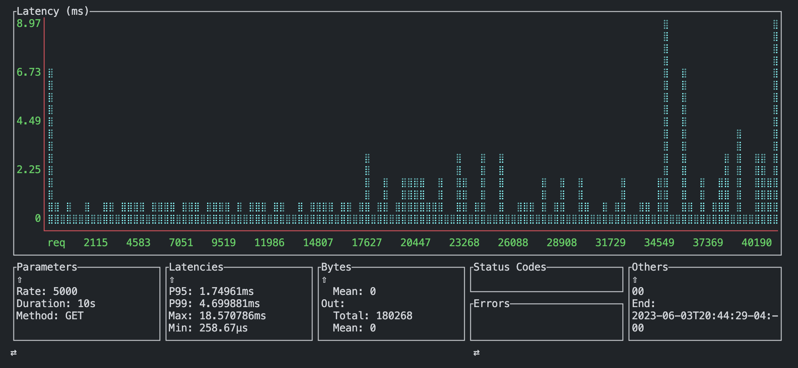
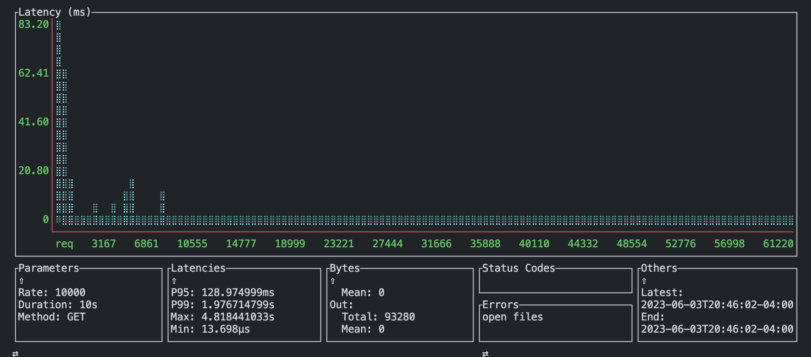

spvn
spvn is a work in progress project which seeks to bring rust asgi bindings into python. it is in progress, contributions & development are welcome
ASGI State Management
stateDiagram-v2
Request--> Bytes
Bytes --> PyDelayed(receive)
PyDelayed(receive) --> PyFuture(received)
PyFuture(received) --> PythonPtr(bytes)
PythonPtr(bytes) --> ASGI
PythonPtr(received) --> ASGI
PythonPtr(scope) --> ASGI
Request --> asgi_from_request
asgi_from_request --> PythonPtr(scope)
Send --> SendReceiver
Send --> PyDelayed(send)
PyDelayed(send) --> PyFuture(sent)
PyFuture(sent) --> None
PyDelayed(scope) --> Caller.call
PyDelayed(send) --> Caller.call
PyDelayed(receive) --> Caller.call
Caller.call --> await
ASGI --> SendReceiver
SendReceiver --> ReceiveStart
SendReceiver --> ReceiveBody
ReceiveStart --> Response
ReceiveBody --> Response
Project Status
Roughly in order of priority
-
[✅] Integrate standard import semantics
-
[✅] PyCaller
- [✅] (rust) Async safe integration
- [✅] Abstract (py fn) async / sync handle
- [✅] Caller pool [this will be revised, its too slow]
-
[🚧] Standard asgi traits & structs
- [🚧] ASGIScope
- [✅] (rust) Async safe integration
- [🚧] Conversion from
tower::Body->dict
- [✅] ASGIVersion
- [🚧] ASGIMessage
- [✅] Lifecycle Scope
- [✅] HTTP Lifecycle Scope
- [🚧] Websockets (msg integration)
- [🚧] ASGIScope
-
[✅] App listener
-
[🚧] App dispatcher
- [✅] Async threadsafe
- [🚧] Lifecycle activation for caller objects
-
[🚧] App scheduler
- [✅] Injectable
awaitables(rust ptr -> python ptr) - [✅] Async threadsafe
- [✅] Delayed py-fn call
- [🚧] Scheduler into py
- [✅] Injectable
-
[🚧] Live reloader
-
[🚧] Websockets
Rationale & Goals
- Relieve limits by python in networking applications
- The goal is not to create the 'fastest' ASGI server, but reliable ASGI services which don't drop calls when subject to extreme concurrency
- Safe python threadpooling unmanaged by GIL runtime
Claims
The upper bounds of python concurrency are not really production ready
Rationale
- Uvicorn drops requests & stalls on IO > 7500 concurrent clients
- Hypercorn drops requests & stalls on IO > 7500 concurrent clients
In both, we must horizontally scale to accomodate these limits in our systems. This is further accompanied by essentially a second layer of IO bound processes, which are evidently unable to maintain highly concurrent environments
Proposed
Delegation of connection multiplex, stream, and IO processes into Rust, and autoinjection at runtime following standard ASGI protocol.
Preliminary Tests
- perf has test files containing basic benchmarks
- hypercorn @ 1 worker = 683402-788307 ns
- spvn -> py @ 1 worker = 159201-221808 ns
This is a very preliminary implementation of the caller protocol using async processes.
Visualization
Tests performed using ali. See perf/ali for methodology.
 spvn @ 5000 reqs/s
 spvn @ 10000 reqs/s
 uvicorn @ 1000 reqs/s
uvicorn @ 1000 reqs/s
 uvicorn @ 5000 reqs/s (DDOS Success)
uvicorn @ 5000 reqs/s (DDOS Success)
 hypercorn @ 1000 reqs/s
hypercorn @ 1000 reqs/s
 hypercorn @ 5000 reqs/s (DDOS Success)
hypercorn @ 5000 reqs/s (DDOS Success)
Developing
Pre-requisites
Python >= 3.9
- Use virtualenv / venv
python3.10 -m (venv|virtualenv) env && \
. ./env/bin/activate && \
pip install maturin
- Test bindings by running
maturin develop
Rust >= 1.69.0
- Build CLI
cargo build
- Run CLI
target/debug/spvn serve dotest.foo:app
pypi

-> pip install spvn
-> spvn serve foo.bar:app (dev)
crates
| spvn |  |
|---|---|
| spvn_caller |  |
| spvn_listen |  |
| spvn_lifespan |  |